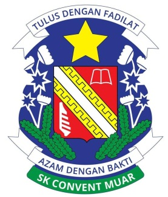

EDUCATION
HOME
MY PROFILE
EXPERIENCE
EDUCATION
FAMILY
GALLERY
History of Education
Year
Education places
2009
Tadika Bestari
2010
Tadika Suriang
2011-2016
SK Convent Muar
2017-2021
SM Sains Batu Pahat
2022-now
UITM Segamat
2011-2016

Sekolah Kebangsaan Convent Muar
from standard 1 to 6
UPSR:5A and actively participated in variety of programs
2017-2021
Sekolah Menengah Sains Batu Pahat
Science stream student
actively participated academicly and cocuriculums
2022-now
UITM Segamat, Johor
College Computing, Informatic and Mathematics
Information Management students